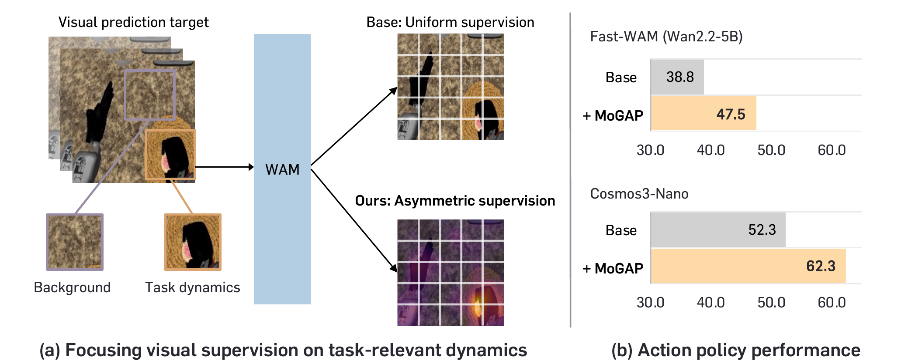
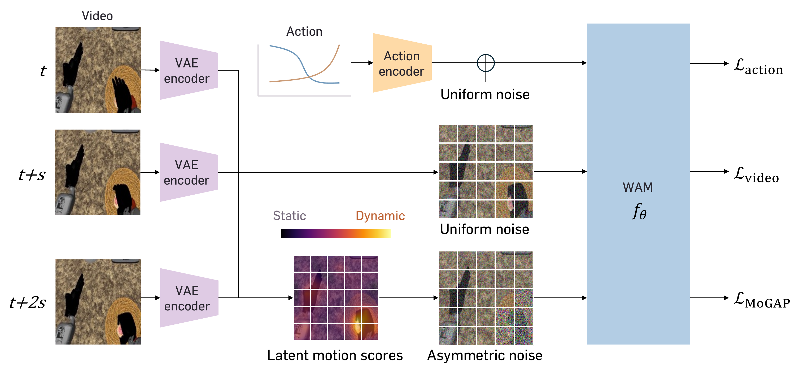
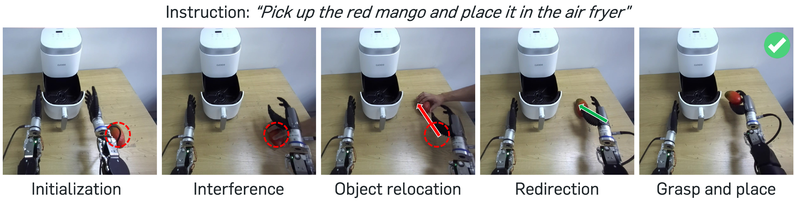
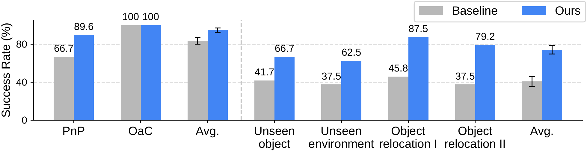
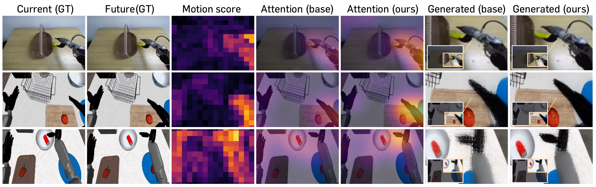

World Action Models (WAMs) leverage pretrained video generative models for robotic control by jointly predicting future visual observations and actions. The visual prediction objective plays a key role in adapting pretrained video representations to the target robot domain. Yet standard visual prediction inherited from video pretraining treats all visual regions uniformly, despite their differing relevance to robotic control. We therefore investigate the spatial allocation of visual supervision in WAMs and show that focusing supervision on dynamic regions can substantially improve policy performance. Building on this finding, we introduce Motion-Guided Asymmetric Prediction (MoGAP), which augments WAM training with motion-focused visual prediction. MoGAP allocates noise asymmetrically across regions, training the model to reconstruct more heavily corrupted dynamic regions using less corrupted static regions as context. MoGAP is trained alongside standard video–action prediction through a training-only auxiliary prediction path within the shared video diffusion backbone. It uses motion cues derived directly from training videos, requiring neither an external teacher nor additional modalities. Across robot manipulation benchmarks and WAM architectures, MoGAP consistently improves policy performance, increasing success rates on the GR-1 tabletop benchmark from 38.8% to 47.5% for Fast-WAM (Wan2.2-5B) and from 52.3% to 62.3% for Cosmos3-Nano. We further demonstrate MoGAP's effectiveness in physical deployment through evaluation on a real humanoid robot.
Dynamic regions capture robot motion and object interactions, while static regions often hold visually complex but control-irrelevant details such as tabletop textures. Simply reallocating a fixed visual supervision budget toward dynamic regions already improves policy performance (Fast-WAM 38.8% → 41.8%, Cosmos3 52.3% → 57.7% on GR-1 Tabletop). MoGAP turns this insight into a dedicated prediction task, yielding substantially larger gains.

Motion-Guided Asymmetric Prediction (MoGAP) treats dynamic regions as prediction targets and static regions as scene context. It is built from three key components:

On an OpenArm humanoid with two five-finger Inspire hands, MoGAP improves over the baseline across all task groups, with the largest gains on out-of-domain tasks (average 40.6% → 74.0%). When the target object is relocated during execution, the baseline keeps reaching for the old location, whereas MoGAP redirects toward the moved object (45.8% → 87.5%), even though no relocation demonstrations were seen during training.


On RoboCasa GR-1 Tabletop (24 humanoid manipulation tasks), MoGAP lifts Cosmos3 from 52.3% to 62.3%, surpassing all compared VLA and WAM methods, and lifts Fast-WAM (Wan2.2-5B) from 38.8% to 47.5%.
| Method | PnP | Articulated | Avg. |
|---|---|---|---|
| VLA-based methods | |||
| GR00T-N1.6 | 55.4 | 24.2 | 47.6 |
| StarVLA-α | 58.4 | 54.0 | 57.3 |
| RLDX-1 | 59.0 | 57.7 | 58.7 |
| WAM-based methods | |||
| Fast-WAM | 33.8 | 53.7 | 38.8 |
| DiT4DiT | 50.9 | 50.3 | 50.8 |
| Cosmos3 | 48.3 | 64.3 | 52.3 |
| MoGAP (Ours) | 60.8 | 66.7 | 62.3 |
Comparison with state-of-the-art VLAs and WAMs (success rate, %).
| Method (on Cosmos3) | Teacher | Avg. |
|---|---|---|
| Baseline | – | 52.3 |
| Geometry Forcing | VGGT | 53.9 |
| AGRA | DINOv2 | 55.4 |
| TSA | VideoMAEv2 | 56.8 |
| VideoREPA | VideoMAEv2 | 57.8 |
| VideoREPA | V-JEPA2.1-L | 59.2 |
| MoGAP (Ours) | – | 62.3 |
Comparison to teacher-based supervision (success rate, %).
Latent motion scores localize subtle arm, hand, and object motion. After training with MoGAP, the action tokens attend more strongly to the moving hand and manipulated object, and generated future frames preserve the moving arm more clearly instead of blurring it.
